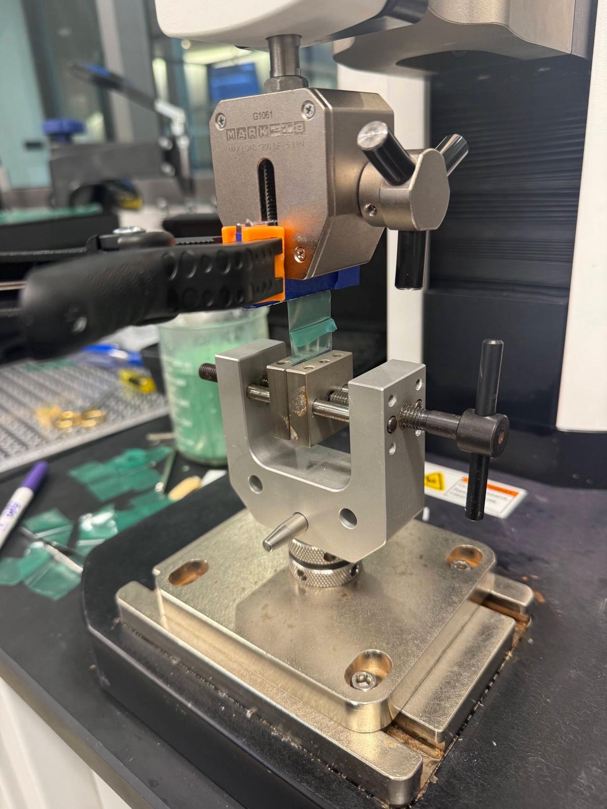

Morimoto Lab @ UCSD
March 2025 – Present
Project Overview & Problem Statement
As an undergraduate researcher, I worked on designing and manufacturing a 3D Resin Printed notched wrist tendon driven mechanism with a soft everting vine robot for endovascular navigation through a Type 2 Aortic Arch. The main challenge was designing a mechanism that could fit within the small diameter of the surgical introducer (4mm). I also worked on implementing and optimizing the best lasercutter settings for laserwelding TPU and characterize its performance via tensile T-peel tests.

Key Engineering Contributions
- 3D printing: Characterized the Resin 3D printing limitations and optimized the design for manufacturability.
- Design: Analyzed geometric constraints and optimized dimensions to allow for antagonistic steering for better manueverability and implemented external tendon routing to allow for increased working channel.
- Testing T-peel tests were conducted to evaluate the performance of the laserwelded TPU joints. Tested the force experienced during insertion of the device using an Arduino and Linear Actuator to create a test fixture
Results & Impact
By routing external steering tendons and integrating radio-opaque ink markers, steering performance and real-time fluoroscopic visibility during surgical procedures were significantly improved. Additionally, I constructed a parametric spreadsheet model to optimize dimensions for antagonistic steering in subsequent iterations.